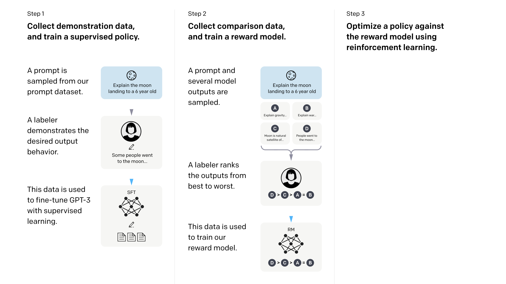

After training, we generally perform alignment i.e teaching the model how to behave/act in desired manner. Post training mainly consists 1) Supervised Fine-tuning 2) RLHF
the current consensus within the research community seems to be that the optimal approach to alignment is to i) perform SFT over a moderately-sized dataset of examples with very high quality and ii) invest remaining efforts into curating human preference data for fine-tuning via RLHF.
Supervised Fine-tuning
Similar to pretraining, we perform next token prediction, but on different high-quality dataset.
Why doesn’t pre-training work out of the box ? because the training objective is different, In pretraining we force the model to just predict the next token using data sampled from the internet, in one iteration the model could be learning about “how to make pizza” and in another iteration it could be learning “how half the species in Australia became extinct after humans arrived”. The data is sampled randomly. However, In SFT do the next token predict on highly curated instruction following dataset, so now we are making it to follow instructions again and again. As you can see the instruction following objective allows the model to learn instruction following with very small data.
NOTE: in SFT we don’t consider the loss for the input tokens but only the output tokens
for instance, we only consider the loss for the tokens from “assistant” role, and not the ‘user’ role, which can be found here in llama2 paper: https://arxiv.org/pdf/2307.09288
We utilize an autoregressive objective and zero-out the loss on tokens from the user prompt, so as a result, we backpropagate only on answer tokens. Finally, we fine-tune the model for 2 epochs.
 figure: InstructGPT paper
Supervised fine-tuning (SFT). We fine-tune GPT-3 on our labeler demonstrations using supervised learning. We trained for 16 epochs, using a cosine learning rate decay, and residual dropout of 0.2. We do our final SFT model selection based on the RM score on the validation set. Similarly to Wu et al. (2021), we find that our SFT models overfit on validation loss after 1 epoch; however, we find that training for more epochs helps both the RM score and human preference ratings, despite this overfitting - InstructGPT paper
Datasets
For basic conversations: https://huggingface.co/datasets/HuggingFaceTB/everyday-conversations-llama3.1-2k
from smolTalk
keep all of Everyday-Conversations filter math, coding dataset filter to 512 tokens
magic-pie ultra - he dataset contains challenging instructions and responses for a wide variety of tasks, such as Coding & debugging, Math, Data analysis, Creative Writing, advice seeking, or Brainstorming.
Take magic-pie-ultra remove math and coding and debugging, limit upto two-turn conversation, and keep only rows with < 512 tokens
take smoltalk, do the same, select Smol-Rewrite, smol-constraints, smol-summarization
remove the system prompt, by combining it to user prompt
select 5k examples from each
combine it with filtered magpie
mix it with all of everyday conversations
see here https://colab.research.google.com/drive/1QkIpkhaZVNvZwBoD69N5O-md5FjRSW_W?usp=sharing
colab train link: https://www.linkedin.com/in/mihirsinh-chauhan-5bb437239/
remove columns with larger seq len than 512
conversational open data: https://huggingface.co/datasets/OpenAssistant/oasst1/viewer/default/train?row=0
synthetic data https://github.com/thunlp/UltraChat?tab=readme-ov-file
To teach models to say certain things we either train it on sft datasets, or we put it in system message i.e put it in it’s context windows (usually hidden from users)
olmo hard coded sft mixture data https://huggingface.co/datasets/allenai/olmo-2-hard-coded?row=2
First, I remember that in supervised fine-tuning (SFT) for language models, especially in conversational settings, the standard practice is to train the model only on the assistant’s responses. This is because the model’s role is to generate appropriate responses given the user’s input, not to learn to predict the user’s messages.